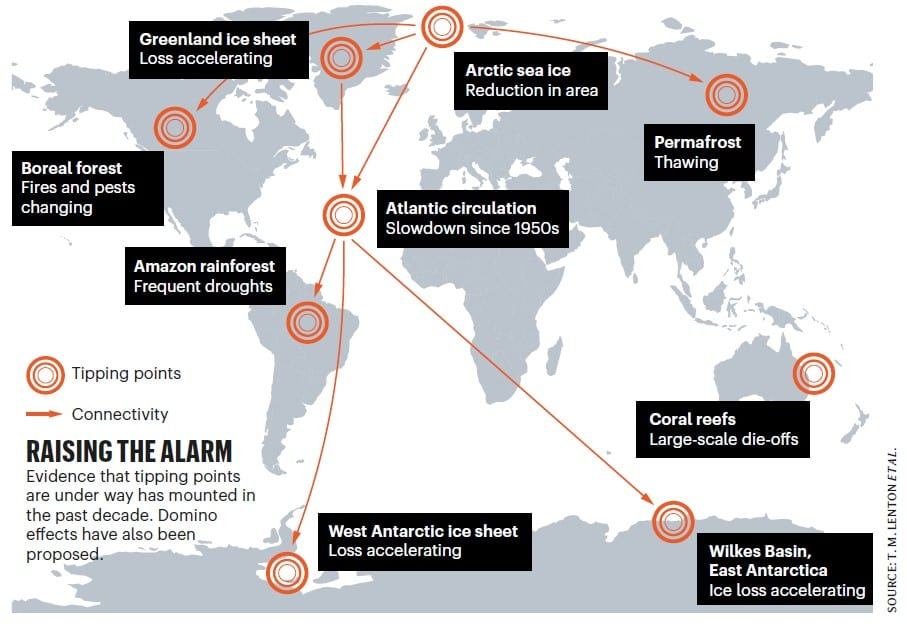
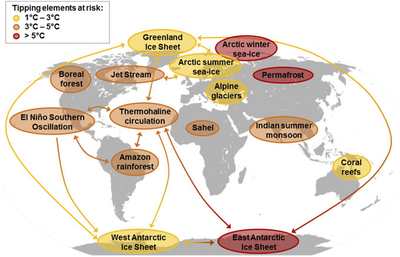

![Logo](data:image/svg+xml;base64,PD94bWwgdmVyc2lvbj0iMS4wIiBlbmNvZGluZz0idXRmLTgiPz4KPCEtLSBHZW5lcmF0b3I6IEFk%0D%0Ab2JlIElsbHVzdHJhdG9yIDIzLjAuMSwgU1ZHIEV4cG9ydCBQbHVnLUluIC4gU1ZHIFZlcnNpb246%0D%0AIDYuMDAgQnVpbGQgMCkgIC0tPgo8c3ZnIHZlcnNpb249IjEuMSIgaWQ9IkxheWVyXzEiIHhtbG5z%0D%0APSJodHRwOi8vd3d3LnczLm9yZy8yMDAwL3N2ZyIgeG1sbnM6eGxpbms9Imh0dHA6Ly93d3cudzMu%0D%0Ab3JnLzE5OTkveGxpbmsiIHg9IjBweCIgeT0iMHB4IgoJIHZpZXdCb3g9IjAgMCA4MDAgODAwIiBz%0D%0AdHlsZT0iZW5hYmxlLWJhY2tncm91bmQ6bmV3IDAgMCA4MDAgODAwOyIgeG1sOnNwYWNlPSJwcmVz%0D%0AZXJ2ZSI+CjxzdHlsZSB0eXBlPSJ0ZXh0L2NzcyI+Cgkuc3Qwe2ZpbGw6IzhENzFFMjt9Cgkuc3Qx%0D%0Ae2ZpbGw6Izc2NTJDRTt9Cgkuc3Qye2ZpbGw6Izc4NTFBOTt9Cjwvc3R5bGU+CjxnPgoJPGNpcmNs%0D%0AZSBjeD0iMjUwOCIgY3k9IjQwMCIgcj0iMzg4Ii8+Cgk8Zz4KCQk8cGF0aCBjbGFzcz0ic3QwIiBk%0D%0APSJNMjcwNy4zNSwyMzkuMDVMMjcwNy4zNSwyMzkuMDVjMCwwLDAuMDEsMC4wMSwwLjAxLDAuMDFM%0D%0AMjcwNy4zNSwyMzkuMDV6Ii8+CgkJPHBhdGggY2xhc3M9InN0MCIgZD0iTTI3NDkuNzEsMjkxLjAz%0D%0AYy0xLjgyLTguNTMtNi44NC0xNi45Mi0xNS4wOC0yNS4xOGMtNS4zMS01LjMzLTEwLjU5LTguNDct%0D%0AMTUuNzUtOS40NQoJCQljLTUuMjUtMC45OC05LjktMC4yOC0xNC4xMSwyLjIxYy00LjE4LDIuNDUt%0D%0AOS4zNSw2LjcyLTE1LjQ5LDEyLjg0bC01Ny4yMiw1Ny4wOGMtNy4zMi0xMS4zNy05LjgzLTIyLjkz%0D%0ALTcuNS0zNC42MwoJCQljMi4zMy0xMS43Myw3Ljk3LTIyLjA3LDE2LjkxLTMwLjk5YzE2Ljk2LTE2%0D%0ALjkyLDMzLjM4LTIxLjM4LDQ5LjMtMTMuNGwxNi41Ny0xMC40NWMtOS40NC05LjkzLTIyLjE0LTE0%0D%0ALjQzLTM4LjExLTEzLjQ1CgkJCWMtMTUuOTQsMC45NS0zMC43Myw4LjI3LTQ0LjQ0LDIxLjk1Yy0x%0D%0ANC43OSwxNC43Ni0yMi4yNCwzMS41MS0yMi4zMiw1MC4zMmMtMC4wOCwxOC43Miw1LjI1LDMzLjQ5%0D%0ALDE1Ljk3LDQ0LjI0bC0yMS4yNiwyMS4yMgoJCQljLTAuOTUtMS4wMi0xLjkyLTIuMDMtMi45My0z%0D%0ALjAyYy0xNy40LTE3LjE5LTQyLjU2LTI2LjczLTc1LjMzLTI4Ljh2LTI4LjM2aDQzLjkzdi0yMi42%0D%0AaC0xMTUuOHYyMi42aDQwLjg0djI4LjM2CgkJCWMtMjIuNDcsMS4xLTQxLjAyLDUuNjktNTUuNTgs%0D%0AMTMuNzZjLTYuODIsMy44LTEyLjksOC4yNC0xOC4yNiwxMy4zMWwtMTYuNS0xNi40NmMxMC43Mi0x%0D%0AMC43NSwxNi4wNS0yNS41MiwxNS45Ny00NC4yNAoJCQljLTAuMDgtMTguOC03LjUzLTM1LjU2LTIy%0D%0ALjMyLTUwLjMyYy0xMy43MS0xMy42OC0yOC40OS0yMC45OS00NC40NC0yMS45NWMtMTUuOTYtMC45%0D%0AOC0yOC42NiwzLjUyLTM4LjExLDEzLjQ1bDE2LjU3LDEwLjQ1CgkJCWMxNS45Mi03Ljk4LDMyLjM0%0D%0ALTMuNTIsNDkuMywxMy40YzguOTQsOC45MiwxNC41OCwxOS4yNiwxNi45MSwzMC45OWMyLjMzLDEx%0D%0ALjctMC4xOCwyMy4yNi03LjUsMzQuNjNsLTU3LjIyLTU3LjA4CgkJCWMtNi4xMy02LjEyLTExLjMt%0D%0AMTAuMzktMTUuNDktMTIuODRjLTQuMjEtMi40OC04Ljg2LTMuMTgtMTQuMTEtMi4yMWMtNS4xNyww%0D%0ALjk4LTEwLjQ0LDQuMTItMTUuNzUsOS40NQoJCQljLTguMjQsOC4yNi0xMy4yNiwxNi42NS0xNS4w%0D%0AOCwyNS4xOGMtMS44LDguNTYtMC45LDE4LjE5LDIuNzYsMjguOTdjMy42OCwxMC44Myw5LjYzLDIw%0D%0ALjM1LDE3Ljk2LDI4LjY2CgkJCWM2Ljk1LDYuOTQsMTUuMzMsMTIuNDcsMjUuMTMsMTYuNTVjOS43%0D%0AOCw0LjEsMjAuNzgsNS45MiwzMi45OCw1LjM4YzEyLjE4LTAuNTYsMjQuNTMtNC44OCwzNy4wMi0x%0D%0AMy4wM2wxOC4wNywxOC4wMgoJCQljLTAuNiwwLjk3LTEuMTksMS45Ni0xLjc2LDIuOTdjLTguMDIs%0D%0AMTQuMDctMTEuOTksMjkuNzgtMTEuOTksNDcuMTJjMCwyNi41LDkuMiw0OC4yOCwyNy42NSw2NS4y%0D%0AOQoJCQljMTguNDIsMTYuOTYsNDMuMDIsMjYuMDYsNzMuOCwyNy4yMXYzMy43NmgtNDAuODR2MjIu%0D%0ANmgxMTUuOHYtMjIuNmgtNDMuOTN2LTMzLjc2YzI5Ljk1LTEuMDIsNTQuMzItOS44MSw3My4yMS0y%0D%0ANi4zNAoJCQljMTguODMtMTYuNTMsMjguMjYtMzkuMDgsMjguMjYtNjcuNmMwLTE1Ljk2LTMuNDMt%0D%0AMzAuMy0xMC4yNy00Mi45OWwyMy43NC0yMy42OWMxMi40OSw4LjE1LDI0Ljg0LDEyLjQ3LDM3LjAy%0D%0ALDEzLjAzCgkJCWMxMi4xOSwwLjU0LDIzLjE5LTEuMjgsMzIuOTgtNS4zOGM5LjgtNC4wOSwxOC4x%0D%0AOC05LjYyLDI1LjEzLTE2LjU1YzguMzMtOC4zMSwxNC4yOC0xNy44MywxNy45Ni0yOC42NgoJCQlD%0D%0AMjc1MC42MSwzMDkuMjIsMjc1MS41MSwyOTkuNTksMjc0OS43MSwyOTEuMDN6IE0yMzM2LjcxLDM0%0D%0AOS44NmMtMTIuMTMtMS42NC0yMy43Mi04LjAxLTM0Ljg4LTE5LjE1CgkJCWMtMTAuMzYtMTAuMzMt%0D%0AMTUuOTktMTkuNzktMTYuOTUtMjguMzFjLTAuOTMtOC41NSwwLjc1LTE0Ljk2LDUuMDMtMTkuMjVj%0D%0AMy4wNC0zLjA1LDYuMzYtNC4yMyw5Ljg3LTMuNTVzOC44NCw0LjYzLDE2LjAxLDExLjc5CgkJCWw1%0D%0AMi4wNCw1MS45MkMyMzU5LjE4LDM0OS4zLDIzNDguODEsMzUxLjQ3LDIzMzYuNzEsMzQ5Ljg2eiBN%0D%0AMjQzOC41MSw0NzQuNjFjLTEzLjItMTEuMjUtMTkuODEtMjcuNTUtMTkuODEtNDkuMQoJCQljMC0y%0D%0AMS4zNSw2LjA1LTM3LjY0LDE4LjEyLTQ5LjA0YzEyLjEyLTExLjQsMjkuMTMtMTcuNDgsNTEuMDct%0D%0AMTguMDd2MC4wM3YxMzMuNDNDMjQ2OC4xOSw0OTEuNTIsMjQ1MS43MSw0ODUuNzgsMjQzOC41MSw0%0D%0ANzQuNjF6CgkJCSBNMjU3MC4yLDQ3My40NmMtMTIuMzMsMTEuNjEtMjkuNDcsMTcuNzEtNTEuMjcs%0D%0AMTguMzd2LTEzMy40YzIyLjkxLDAsNDAuMjYsNi4xOCw1Mi4wOSwxOC42YzExLjg0LDEyLjM4LDE3%0D%0ALjczLDI4LjQyLDE3LjczLDQ3Ljk5CgkJCUMyNTg4Ljc1LDQ0NS42OCwyNTgyLjU3LDQ2MS44NSwy%0D%0ANTcwLjIsNDczLjQ2eiBNMjczMS4xMiwzMDIuMzljLTAuOTUsOC41My02LjU5LDE3Ljk4LTE2Ljk1%0D%0ALDI4LjMxCgkJCWMtMTEuMTcsMTEuMTQtMjIuNzYsMTcuNTEtMzQuODgsMTkuMTVjLTEyLjEsMS42%0D%0AMS0yMi40Ny0wLjU1LTMxLjEzLTYuNTZsNTIuMDQtNTEuOTJjNy4xNy03LjE2LDEyLjUtMTEuMTEs%0D%0AMTYuMDEtMTEuNzkKCQkJczYuODMsMC41MSw5Ljg3LDMuNTVDMjczMC4zNywyODcuNDQsMjczMi4w%0D%0ANCwyOTMuODQsMjczMS4xMiwzMDIuMzl6Ii8+CgkJPHBhdGggY2xhc3M9InN0MCIgZD0iTTIzMDgu%0D%0ANjQsMjM5LjA3YzAsMCwwLjAxLTAuMDEsMC4wMS0wLjAxbDAsMEwyMzA4LjY0LDIzOS4wN3oiLz4K%0D%0ACTwvZz4KPC9nPgo8Zz4KCTxjaXJjbGUgY3g9IjE0NTgiIGN5PSI0MDAiIHI9IjM4OCIvPgoJPGc+%0D%0ACgkJPHBhdGggY2xhc3M9InN0MSIgZD0iTTE2NTcuMzUsMjM5LjA1TDE2NTcuMzUsMjM5LjA1YzAs%0D%0AMCwwLjAxLDAuMDEsMC4wMSwwLjAxTDE2NTcuMzUsMjM5LjA1eiIvPgoJCTxwYXRoIGNsYXNzPSJz%0D%0AdDEiIGQ9Ik0xNjk5LjcxLDI5MS4wM2MtMS44Mi04LjUzLTYuODQtMTYuOTItMTUuMDgtMjUuMThj%0D%0ALTUuMzEtNS4zMy0xMC41OS04LjQ3LTE1Ljc1LTkuNDUKCQkJYy01LjI1LTAuOTgtOS45LTAuMjgt%0D%0AMTQuMTEsMi4yMWMtNC4xOCwyLjQ1LTkuMzUsNi43Mi0xNS40OSwxMi44NGwtNTcuMjIsNTcuMDhj%0D%0ALTcuMzItMTEuMzctOS44My0yMi45My03LjUtMzQuNjMKCQkJYzIuMzMtMTEuNzMsNy45Ny0yMi4w%0D%0ANywxNi45MS0zMC45OWMxNi45Ni0xNi45MiwzMy4zOC0yMS4zOCw0OS4zLTEzLjRsMTYuNTctMTAu%0D%0ANDVjLTkuNDQtOS45My0yMi4xNC0xNC40My0zOC4xMS0xMy40NQoJCQljLTE1Ljk0LDAuOTUtMzAu%0D%0ANzMsOC4yNy00NC40NCwyMS45NWMtMTQuNzksMTQuNzYtMjIuMjQsMzEuNTEtMjIuMzIsNTAuMzJj%0D%0ALTAuMDgsMTguNzIsNS4yNSwzMy40OSwxNS45Nyw0NC4yNGwtMjEuMjcsMjEuMjIKCQkJYy0wLjk1%0D%0ALTEuMDItMS45Mi0yLjAzLTIuOTMtMy4wMmMtMTcuNC0xNy4xOS00Mi41Ni0yNi43My03NS4zNC0y%0D%0AOC44di0yOC4zNmg0My45M3YtMjIuNmgtMTE1Ljh2MjIuNmg0MC44NHYyOC4zNgoJCQljLTIyLjQ3%0D%0ALDEuMS00MS4wMiw1LjY5LTU1LjU4LDEzLjc2Yy02LjgyLDMuOC0xMi45LDguMjQtMTguMjYsMTMu%0D%0AMzFsLTE2LjUtMTYuNDZjMTAuNzItMTAuNzUsMTYuMDUtMjUuNTIsMTUuOTctNDQuMjQKCQkJYy0w%0D%0ALjA4LTE4LjgtNy41My0zNS41Ni0yMi4zMi01MC4zMmMtMTMuNzEtMTMuNjgtMjguNDktMjAuOTkt%0D%0ANDQuNDQtMjEuOTVjLTE1Ljk2LTAuOTgtMjguNjYsMy41Mi0zOC4xMSwxMy40NWwxNi41NywxMC40%0D%0ANQoJCQljMTUuOTItNy45OCwzMi4zNC0zLjUyLDQ5LjMsMTMuNGM4Ljk0LDguOTIsMTQuNTgsMTku%0D%0AMjYsMTYuOTEsMzAuOTljMi4zMywxMS43LTAuMTgsMjMuMjYtNy41LDM0LjYzbC01Ny4yMi01Ny4w%0D%0AOAoJCQljLTYuMTMtNi4xMi0xMS4zLTEwLjM5LTE1LjQ5LTEyLjg0Yy00LjIxLTIuNDgtOC44Ni0z%0D%0ALjE4LTE0LjExLTIuMjFjLTUuMTcsMC45OC0xMC40NCw0LjEyLTE1Ljc1LDkuNDUKCQkJYy04LjI0%0D%0ALDguMjYtMTMuMjYsMTYuNjUtMTUuMDgsMjUuMThjLTEuOCw4LjU2LTAuOSwxOC4xOSwyLjc2LDI4%0D%0ALjk3YzMuNjgsMTAuODMsOS42MywyMC4zNSwxNy45NiwyOC42NgoJCQljNi45NSw2Ljk0LDE1LjMz%0D%0ALDEyLjQ3LDI1LjEzLDE2LjU1YzkuNzgsNC4xLDIwLjc4LDUuOTIsMzIuOTgsNS4zOGMxMi4xOC0w%0D%0ALjU2LDI0LjUzLTQuODgsMzcuMDItMTMuMDNsMTguMDcsMTguMDIKCQkJYy0wLjYsMC45Ny0xLjE5%0D%0ALDEuOTYtMS43NiwyLjk3Yy04LjAyLDE0LjA3LTExLjk5LDI5Ljc4LTExLjk5LDQ3LjEyYzAsMjYu%0D%0ANSw5LjIsNDguMjgsMjcuNjUsNjUuMjkKCQkJYzE4LjQyLDE2Ljk2LDQzLjAyLDI2LjA2LDczLjgs%0D%0AMjcuMjF2MzMuNzZoLTQwLjg0djIyLjZoMTE1Ljh2LTIyLjZoLTQzLjkzdi0zMy43NmMyOS45NS0x%0D%0ALjAyLDU0LjMyLTkuODEsNzMuMjEtMjYuMzQKCQkJYzE4LjgzLTE2LjUzLDI4LjI2LTM5LjA4LDI4%0D%0ALjI2LTY3LjZjMC0xNS45Ni0zLjQzLTMwLjMtMTAuMjctNDIuOTlsMjMuNzQtMjMuNjljMTIuNDks%0D%0AOC4xNSwyNC44NCwxMi40NywzNy4wMiwxMy4wMwoJCQljMTIuMTksMC41NCwyMy4xOS0xLjI4LDMy%0D%0ALjk4LTUuMzhjOS44LTQuMDksMTguMTgtOS42MiwyNS4xMy0xNi41NWM4LjMzLTguMzEsMTQuMjgt%0D%0AMTcuODMsMTcuOTYtMjguNjYKCQkJQzE3MDAuNjEsMzA5LjIyLDE3MDEuNTEsMjk5LjU5LDE2OTku%0D%0ANzEsMjkxLjAzeiBNMTI4Ni43MSwzNDkuODZjLTEyLjEzLTEuNjQtMjMuNzItOC4wMS0zNC44OC0x%0D%0AOS4xNQoJCQljLTEwLjM2LTEwLjMzLTE1Ljk5LTE5Ljc5LTE2Ljk1LTI4LjMxYy0wLjkzLTguNTUs%0D%0AMC43NS0xNC45Niw1LjAzLTE5LjI1YzMuMDQtMy4wNSw2LjM2LTQuMjMsOS44Ny0zLjU1czguODQs%0D%0ANC42MywxNi4wMSwxMS43OQoJCQlsNTIuMDQsNTEuOTJDMTMwOS4xOCwzNDkuMywxMjk4LjgxLDM1%0D%0AMS40NywxMjg2LjcxLDM0OS44NnogTTEzODguNTEsNDc0LjYxYy0xMy4yLTExLjI1LTE5LjgxLTI3%0D%0ALjU1LTE5LjgxLTQ5LjEKCQkJYzAtMjEuMzUsNi4wNS0zNy42NCwxOC4xMi00OS4wNGMxMi4xMi0x%0D%0AMS40LDI5LjEzLTE3LjQ4LDUxLjA3LTE4LjA3djAuMDN2MTMzLjQzQzE0MTguMTksNDkxLjUyLDE0%0D%0AMDEuNzEsNDg1Ljc4LDEzODguNTEsNDc0LjYxegoJCQkgTTE1MjAuMiw0NzMuNDZjLTEyLjMzLDEx%0D%0ALjYxLTI5LjQ3LDE3LjcxLTUxLjI3LDE4LjM3di0xMzMuNGMyMi45MSwwLDQwLjI2LDYuMTgsNTIu%0D%0AMDksMTguNmMxMS44NCwxMi4zOCwxNy43MywyOC40MiwxNy43Myw0Ny45OQoJCQlDMTUzOC43NSw0%0D%0ANDUuNjgsMTUzMi41Nyw0NjEuODUsMTUyMC4yLDQ3My40NnogTTE2ODEuMTIsMzAyLjM5Yy0wLjk1%0D%0ALDguNTMtNi41OSwxNy45OC0xNi45NSwyOC4zMQoJCQljLTExLjE3LDExLjE0LTIyLjc2LDE3LjUx%0D%0ALTM0Ljg4LDE5LjE1Yy0xMi4xLDEuNjEtMjIuNDctMC41NS0zMS4xMy02LjU2bDUyLjA0LTUxLjky%0D%0AYzcuMTctNy4xNiwxMi41LTExLjExLDE2LjAxLTExLjc5CgkJCXM2LjgzLDAuNTEsOS44NywzLjU1%0D%0AQzE2ODAuMzcsMjg3LjQ0LDE2ODIuMDQsMjkzLjg0LDE2ODEuMTIsMzAyLjM5eiIvPgoJCTxwYXRo%0D%0AIGNsYXNzPSJzdDEiIGQ9Ik0xMjU4LjY0LDIzOS4wN2MwLDAsMC4wMS0wLjAxLDAuMDEtMC4wMWww%0D%0ALDBMMTI1OC42NCwyMzkuMDd6Ii8+Cgk8L2c+CjwvZz4KPGc+Cgk8Y2lyY2xlIGN4PSI0MDAiIGN5%0D%0APSI0MDAiIHI9IjM4OCIvPgoJPGc+CgkJPHBhdGggY2xhc3M9InN0MiIgZD0iTTU5OS4zNSwyMzku%0D%0AMDVMNTk5LjM1LDIzOS4wNWMwLDAsMC4wMSwwLjAxLDAuMDEsMC4wMUw1OTkuMzUsMjM5LjA1eiIv%0D%0APgoJCTxwYXRoIGNsYXNzPSJzdDIiIGQ9Ik02NDEuNzEsMjkxLjAzYy0xLjgyLTguNTMtNi44NC0x%0D%0ANi45Mi0xNS4wOC0yNS4xOGMtNS4zMS01LjMzLTEwLjU5LTguNDctMTUuNzUtOS40NQoJCQljLTUu%0D%0AMjUtMC45OC05LjktMC4yOC0xNC4xMSwyLjIxYy00LjE4LDIuNDUtOS4zNSw2LjcyLTE1LjQ5LDEy%0D%0ALjg0bC01Ny4yMiw1Ny4wOGMtNy4zMi0xMS4zNy05LjgzLTIyLjkzLTcuNS0zNC42MwoJCQljMi4z%0D%0AMy0xMS43Myw3Ljk3LTIyLjA3LDE2LjkxLTMwLjk5YzE2Ljk2LTE2LjkyLDMzLjM4LTIxLjM4LDQ5%0D%0ALjMtMTMuNGwxNi41Ny0xMC40NWMtOS40NC05LjkzLTIyLjE0LTE0LjQzLTM4LjExLTEzLjQ1CgkJ%0D%0ACWMtMTUuOTQsMC45NS0zMC43Myw4LjI3LTQ0LjQ0LDIxLjk1Yy0xNC43OSwxNC43Ni0yMi4yNCwz%0D%0AMS41MS0yMi4zMiw1MC4zMmMtMC4wOCwxOC43Miw1LjI1LDMzLjQ5LDE1Ljk3LDQ0LjI0bC0yMS4y%0D%0ANiwyMS4yMgoJCQljLTAuOTUtMS4wMi0xLjkyLTIuMDMtMi45My0zLjAyYy0xNy40LTE3LjE5LTQy%0D%0ALjU2LTI2LjczLTc1LjM0LTI4Ljh2LTI4LjM2aDQzLjkzdi0yMi42aC0xMTUuOHYyMi42aDQwLjg0%0D%0AdjI4LjM2CgkJCWMtMjIuNDcsMS4xLTQxLjAyLDUuNjktNTUuNTgsMTMuNzZjLTYuODIsMy44LTEy%0D%0ALjksOC4yNC0xOC4yNiwxMy4zMWwtMTYuNS0xNi40NmMxMC43Mi0xMC43NSwxNi4wNS0yNS41Miwx%0D%0ANS45Ny00NC4yNAoJCQljLTAuMDgtMTguOC03LjUzLTM1LjU2LTIyLjMyLTUwLjMyYy0xMy43MS0x%0D%0AMy42OC0yOC40OS0yMC45OS00NC40NC0yMS45NWMtMTUuOTYtMC45OC0yOC42NiwzLjUyLTM4LjEx%0D%0ALDEzLjQ1bDE2LjU3LDEwLjQ1CgkJCWMxNS45Mi03Ljk4LDMyLjM0LTMuNTIsNDkuMywxMy40Yzgu%0D%0AOTQsOC45MiwxNC41OCwxOS4yNiwxNi45MSwzMC45OWMyLjMzLDExLjctMC4xOCwyMy4yNi03LjUs%0D%0AMzQuNjNsLTU3LjIyLTU3LjA4CgkJCWMtNi4xMy02LjEyLTExLjMtMTAuMzktMTUuNDktMTIuODRj%0D%0ALTQuMjEtMi40OC04Ljg2LTMuMTgtMTQuMTEtMi4yMWMtNS4xNywwLjk4LTEwLjQ0LDQuMTItMTUu%0D%0ANzUsOS40NQoJCQljLTguMjQsOC4yNi0xMy4yNiwxNi42NS0xNS4wOCwyNS4xOGMtMS44LDguNTYt%0D%0AMC45LDE4LjE5LDIuNzYsMjguOTdjMy42OCwxMC44Myw5LjYzLDIwLjM1LDE3Ljk2LDI4LjY2CgkJ%0D%0ACWM2Ljk1LDYuOTQsMTUuMzMsMTIuNDcsMjUuMTMsMTYuNTVjOS43OCw0LjEsMjAuNzgsNS45Miwz%0D%0AMi45OCw1LjM4YzEyLjE4LTAuNTYsMjQuNTMtNC44OCwzNy4wMi0xMy4wM2wxOC4wNywxOC4wMgoJ%0D%0ACQljLTAuNiwwLjk3LTEuMTksMS45Ni0xLjc2LDIuOTdjLTguMDIsMTQuMDctMTEuOTksMjkuNzgt%0D%0AMTEuOTksNDcuMTJjMCwyNi41LDkuMiw0OC4yOCwyNy42NSw2NS4yOQoJCQljMTguNDIsMTYuOTYs%0D%0ANDMuMDIsMjYuMDYsNzMuOCwyNy4yMXYzMy43NmgtNDAuODR2MjIuNmgxMTUuOHYtMjIuNmgtNDMu%0D%0AOTN2LTMzLjc2YzI5Ljk1LTEuMDIsNTQuMzItOS44MSw3My4yMS0yNi4zNAoJCQljMTguODMtMTYu%0D%0ANTMsMjguMjYtMzkuMDgsMjguMjYtNjcuNmMwLTE1Ljk2LTMuNDMtMzAuMy0xMC4yNy00Mi45OWwy%0D%0AMy43NC0yMy42OWMxMi40OSw4LjE1LDI0Ljg0LDEyLjQ3LDM3LjAyLDEzLjAzCgkJCWMxMi4xOSww%0D%0ALjU0LDIzLjE5LTEuMjgsMzIuOTgtNS4zOGM5LjgtNC4wOSwxOC4xOC05LjYyLDI1LjEzLTE2LjU1%0D%0AYzguMzMtOC4zMSwxNC4yOC0xNy44MywxNy45Ni0yOC42NgoJCQlDNjQyLjYxLDMwOS4yMiw2NDMu%0D%0ANTEsMjk5LjU5LDY0MS43MSwyOTEuMDN6IE0yMjguNzEsMzQ5Ljg2Yy0xMi4xMy0xLjY0LTIzLjcy%0D%0ALTguMDEtMzQuODgtMTkuMTUKCQkJYy0xMC4zNi0xMC4zMy0xNS45OS0xOS43OS0xNi45NS0yOC4z%0D%0AMWMtMC45My04LjU1LDAuNzUtMTQuOTYsNS4wMy0xOS4yNWMzLjA0LTMuMDUsNi4zNi00LjIzLDku%0D%0AODctMy41NQoJCQljMy41MSwwLjY4LDguODQsNC42MywxNi4wMSwxMS43OWw1Mi4wNCw1MS45MkMy%0D%0ANTEuMTgsMzQ5LjMsMjQwLjgxLDM1MS40NywyMjguNzEsMzQ5Ljg2eiBNMzMwLjUxLDQ3NC42MQoJ%0D%0ACQljLTEzLjItMTEuMjUtMTkuODEtMjcuNTUtMTkuODEtNDkuMWMwLTIxLjM1LDYuMDUtMzcuNjQs%0D%0AMTguMTItNDkuMDRjMTIuMTItMTEuNCwyOS4xMy0xNy40OCw1MS4wNy0xOC4wN3YwLjAzdjEzMy40%0D%0AMwoJCQlDMzYwLjE5LDQ5MS41MiwzNDMuNzEsNDg1Ljc4LDMzMC41MSw0NzQuNjF6IE00NjIuMiw0%0D%0ANzMuNDZjLTEyLjMzLDExLjYxLTI5LjQ3LDE3LjcxLTUxLjI3LDE4LjM3di0xMzMuNAoJCQljMjIu%0D%0AOTEsMCw0MC4yNiw2LjE4LDUyLjA5LDE4LjZjMTEuODQsMTIuMzgsMTcuNzMsMjguNDIsMTcuNzMs%0D%0ANDcuOTlDNDgwLjc1LDQ0NS42OCw0NzQuNTcsNDYxLjg1LDQ2Mi4yLDQ3My40NnogTTYyMy4xMiwz%0D%0AMDIuMzkKCQkJYy0wLjk1LDguNTMtNi41OSwxNy45OC0xNi45NSwyOC4zMWMtMTEuMTYsMTEuMTQt%0D%0AMjIuNzUsMTcuNTEtMzQuODgsMTkuMTVjLTEyLjEsMS42MS0yMi40Ny0wLjU1LTMxLjEzLTYuNTZs%0D%0ANTIuMDQtNTEuOTIKCQkJYzcuMTctNy4xNiwxMi41LTExLjExLDE2LjAxLTExLjc5YzMuNTEtMC42%0D%0AOCw2LjgzLDAuNTEsOS44NywzLjU1QzYyMi4zNywyODcuNDQsNjI0LjA0LDI5My44NCw2MjMuMTIs%0D%0AMzAyLjM5eiIvPgoJCTxwYXRoIGNsYXNzPSJzdDIiIGQ9Ik0yMDAuNjQsMjM5LjA3YzAsMCwwLjAx%0D%0ALTAuMDEsMC4wMS0wLjAxaDBMMjAwLjY0LDIzOS4wN3oiLz4KCTwvZz4KPC9nPgo8L3N2Zz4K)
I started keeping track of articles discussing global warming in the news. Here are some highlights.
Nasa-funded study: industrial civilisation headed for 'irreversible collapse'?
Fri 14 Mar 2014 14.28 EDT
Noting that warnings of 'collapse' are often seen to be fringe or controversial, the study attempts to make sense of compelling historical data showing that "the process of rise-and-collapse is actually a recurrent cycle found throughout history." Cases of severe civilisational disruption due to "precipitous collapse - often lasting centuries - have been quite common." The independent research project is based on a new cross-disciplinary 'Human And Nature DYnamical' (HANDY) model, led by applied mathematician Safa Motesharrei of the US National Science Foundation-supported National Socio-Environmental Synthesis Center, in association with a team of natural and social scientists. The HANDY model was created using a minor Nasa grant, but the study based on it was conducted independently. The study based on the HANDY model has been accepted for publication in the peer-reviewed Elsevier journal, Ecological Economics.
"The fall of the Roman Empire, and the equally (if not more) advanced Han, Mauryan, and Gupta Empires, as well as so many advanced Mesopotamian Empires, are all testimony to the fact that advanced, sophisticated, complex, and creative civilizations can be both fragile and impermanent."
By investigating the human-nature dynamics of these past cases of collapse, the project identifies the most salient interrelated factors which explain civilisational decline, and which may help determine the risk of collapse today: namely, Population, Climate, Water, Agriculture, and Energy.
These factors can lead to collapse when they converge to generate two crucial social features: "the stretching of resources due to the strain placed on the ecological carrying capacity"; and "the economic stratification of society into Elites [rich] and Masses (or "Commoners") [poor]" These social phenomena have played "a central role in the character or in the process of the collapse," in all such cases over "the last five thousand years."
Currently, high levels of economic stratification are linked directly to overconsumption of resources, with "Elites" based largely in industrialised countries responsible for both:
"... accumulated surplus is not evenly distributed throughout society, but rather has been controlled by an elite. The mass of the population, while producing the wealth, is only allocated a small portion of it by elites, usually at or just above subsistence levels."
The study challenges those who argue that technology will resolve these challenges by increasing efficiency:
"Technological change can raise the efficiency of resource use, but it also tends to raise both per capita resource consumption and the scale of resource extraction, so that, absent policy effects, the increases in consumption often compensate for the increased efficiency of resource use."
Modelling a range of different scenarios, Motesharrei and his colleagues conclude that under conditions "closely reflecting the reality of the world today... we find that collapse is difficult to avoid." In the first of these scenarios, civilisation:
".... appears to be on a sustainable path for quite a long time, but even using an optimal depletion rate and starting with a very small number of Elites, the Elites eventually consume too much, resulting in a famine among Commoners that eventually causes the collapse of society. It is important to note that this Type-L collapse is due to an inequality-induced famine that causes a loss of workers, rather than a collapse of Nature."
Another scenario focuses on the role of continued resource exploitation, finding that "with a larger depletion rate, the decline of the Commoners occurs faster, while the Elites are still thriving, but eventually the Commoners collapse completely, followed by the Elites."
In both scenarios, Elite wealth monopolies mean that they are buffered from the most "detrimental effects of the environmental collapse until much later than the Commoners", allowing them to "continue 'business as usual' despite the impending catastrophe." The same mechanism, they argue, could explain how "historical collapses were allowed to occur by elites who appear to be oblivious to the catastrophic trajectory (most clearly apparent in the Roman and Mayan cases)."
Applying this lesson to our contemporary predicament, the study warns that:
"While some members of society might raise the alarm that the system is moving towards an impending collapse and therefore advocate structural changes to society in order to avoid it, Elites and their supporters, who opposed making these changes, could point to the long sustainable trajectory 'so far' in support of doing nothing."
"Collapse can be avoided and population can reach equilibrium if the per capita rate of depletion of nature is reduced to a sustainable level, and if resources are distributed in a reasonably equitable fashion."
This country isn't just carbon neutral — it's carbon negative
February 2016
"Deep in the Himalayas, on the border between China and India, lies the Kingdom of Bhutan, which has pledged to remain carbon neutral for all time. In this illuminating talk, Bhutan's Prime Minister Tshering Tobgay shares his country's mission to put happiness before economic growth and set a world standard for environmental preservation."
In July 2019, the same guy gave another talk:
An urgent call to protect the world's "Third Pole"
He acknowledges that we all pretty much don't care about global warming until it effects us individually. For him, the Himalayan glaciers are melting. Reports by climate scientists informed him of the global and local problem. He argues we need to think globally and act regionally and locally. Bhutan hasn't contributed to global warming at all, in fact their country has negative carbon emissions, but they're suffering because of it. Bhutan's economy is around 2 billion dollars.
Mon 10 Jul 2017 01.26 EDT Last modified on Wed 14 Feb 2018 11.57 EST
"The Carbon Majors Report (pdf) “pinpoints how a relatively small set of fossil fuel producers may hold the key to systemic change on carbon emissions,” says Pedro Faria, technical director at environmental non-profit CDP, which published the report in collaboration with the Climate Accountability Institute."
We Have Five Years To Save Ourselves From Climate Change, Harvard Scientist Says
Jan 15, 2018
"The level of carbon now in the atmosphere hasn't been seen in 12 million years, a Harvard scientist said in Chicago Thursday, and this pollution is rapidly pushing the climate back to its state in the Eocene Epoch, more than 33 million years ago, when there was no ice on either pole."
"The ocean was running almost 10ºC warmer all the way to the bottom than it is today," Anderson said of this once-and-future climate, "and the amount of water vapor in the atmosphere would have meant that storm systems would be violent in the extreme, because water vapor, which is an exponential function of water temperature, is the gasoline that fuels the frequency and intensity of storm systems."
Recovery is all but impossible, he argued, without a World War II-style transformation of industry—an acceleration of the effort to halt carbon pollution and remove it from the atmosphere, and a new effort to reflect sunlight away from the earth's poles.
This has do be done, Anderson added, within the next five years.
"The chance that there will be any permanent ice left in the Arctic after 2022 is essentially zero," Anderson said, with 75 to 80 percent of permanent ice having melted already in the last 35 years.
"Can we lose 75-80 percent of permanent ice and recover? The answer is no."
UN report finds temperature rise is 'locked in' for Arctic
03/13/19
"Even if countries were to meet the original goals of the Paris climate agreement, it would do nothing to stop Arctic winter temperatures from increasing 3 to 5 degrees Celsius by 2050 and 5 to 9 degrees Celsius by 2080, according to the report."
"The report also warned that the rapid thawing of permafrost in the region could likely accelerate the effects of climate change, which could completely negate any long-term international pacts and goals to limit global warming to 2 degrees Celsius compared to 1986-2005 levels."
"To put the study’s findings into perspective, even if global emissions were to completely stop overnight, winter temperatures in the arctic would still increase between 4 to 5 degrees Celsius by 2100 compared to the late 20th century’s temperatures, the study found."
"The report says the effects will first be felt by indigenous populations living in Arctic communities. Four million people and nearly 70 percent of today’s Arctic infrastructure will be affected by thawing permafrost by 2050, the report found."
If Seeing the World Helps Ruin It, Should We Stay Home?
June 3, 2019
"The number of airline passengers worldwide has more than doubled since 2003, and unlike with some other pollution sources, there’s not a ton that can be done right now to make flying significantly greener — electrified jets are not coming to an airport near you anytime soon.
Still, we wonder: How much is that one vacation really hurting anyone, or anything?"
"Each additional metric ton of carbon dioxide or its equivalent — your share of the emissions on a cross-country flight one-way from New York to Los Angeles — shrinks the summer sea ice cover by 3 square meters, or 32 square feet, the authors, Dirk Notz and Julienne Stroeve, found."
“The average American causes through his/her greenhouse gas emissions the serious suffering and/or deaths of two future people.”
“At a ratio of one life’s causal activities per one life’s detrimental effects, it [a 25 mile drive] causes the equivalent of a quarter of a day’s severe harm,” he wrote.
“In other words, going for a Sunday drive has the expected effect of ruining someone’s afternoon.”
"But nothing is that simple in practice. Carbon-offset people talk about concerns with things called additionality, leakage and permanence.
Additionality: How do you know the utility would not have built the wind farm but for the money you gave them?
Permanence: How do you know the timber company that planted those trees won’t just cut them down in a few years?
Leakage: How do you know the landowner you just paid not to cut down an acre of rain forest won’t use the money to buy a different acre and clear that?"
New Report Suggests ‘High Likelihood of Human Civilization Coming to an End’ Starting in 2050
Jun 3 2019
The climate change analysis was written by a former fossil fuel executive and backed by the former chief of Australia's military.
"The only way to avoid the risks of this scenario is what the report describes as “akin in scale to the World War II emergency mobilization”—but this time focused on rapidly building out a zero-emissions industrial system to set in train the restoration of a safe climate."
“A high-end 2050 scenario finds a world in social breakdown and outright chaos,” said Spratt. “But a short window of opportunity exists for an emergency, global mobilization of resources, in which the logistical and planning experiences of the national security sector could play a valuable role.”
‘Climate apartheid’: UN expert says human rights may not survive
June 25 2019
"The world is increasingly at risk of “climate apartheid”, where the rich pay to escape heat and hunger caused by the escalating climate crisis while the rest of the world suffers, a report from a UN human rights expert has said.
Philip Alston, UN special rapporteur on extreme poverty and human rights, said the impacts of global heating are likely to undermine not only basic rights to life, water, food, and housing for hundreds of millions of people, but also democracy and the rule of law.
,,,
"Climate change threatens to undo the last 50 years of progress in development, global health, and poverty reduction,” Alston said. Developing countries will bear an estimated 75% of the costs of the climate crisis, the report said, despite the poorest half of the world’s population causing just 10% of carbon dioxide emissions.
“Yet democracy and the rule of law, as well as a wide range of civil and political rights are every bit at risk,” Alston’s report said. “The risk of community discontent, of growing inequality, and of even greater levels of deprivation among some groups, will likely stimulate nationalist, xenophobic, racist and other responses. Maintaining a balanced approach to civil and political rights will be extremely complex.”
The impacts of the climate crisis could increase divisions, Alston said. “We risk a ‘climate apartheid’ scenario where the wealthy pay to escape overheating, hunger, and conflict while the rest of the world is left to suffer,” he said."
Tree planting 'has mind-blowing potential' to tackle climate crisis
July 4 2019
"Planting billions of trees across the world is by far the biggest and cheapest way to tackle the climate crisis, according to scientists, who have made the first calculation of how many more trees could be planted without encroaching on crop land or urban areas.
As trees grow, they absorb and store the carbon dioxide emissions that are driving global heating. New research estimates that a worldwide planting programme could remove two-thirds of all the emissions that have been pumped into the atmosphere by human activities, a figure the scientists describe as “mind-blowing”."
'Climate Despair' Is Making People Give Up on Life
"It's super painful to be a human being right now at this point in history."
By Mike Pearl
Jul 11 2019
"...many people are suffering from what could be called "climate despair," a sense that climate change is an unstoppable force that will render humanity extinct and renders life in the meantime futile. As David Wallace-Wells noted in his 2019 bestseller The Uninhabitable Earth, "For most who perceive an already unfolding climate crisis and intuit a more complete metamorphosis of the world to come, the vision is a bleak one, often pieced together from perennial eschatological imagery inherited from existing apocalyptic texts like the Book of Revelation, the inescapable sourcebook for Western anxiety about the end of the world."
...
According to social scientist and psychology scholar Renee Lertzman, author of 2015's Environmental Melancholia, large numbers of people have recently come to the realization that climate change is real, scary, and not being addressed. "It's a surreal experience because we're still in the same system, so walking around, people are driving, and everyone's eating a lot of meat [and] everyone's acting like that's normal," she said. For some people, that feeling is incompatible with carrying on with the business of everyday life.
...Instead of rallying us, climate despair asks us to give up. In a 2009 study in the UK by researchers Saffron O'Neill and Sophie Nicholson-Cole, climate-related data visualizations were presented to test subjects who were urged, in fear-based terms, to take action or else. Most of the time these appeals produced "denial, apathy, avoidance, and negative associations." Ultimately, the researchers concluded, "climate change images can evoke powerful feelings of issue salience but these do not necessarily make participants feel able to do anything about it; in fact, it may do the reverse." In other words, if you tell people something must be done or we're all gonna die, they tend to take door number two, however irrational that impulse may seem."
He goes on to introduce criticism and replies of Jem Bendell's paper and Wallace-Welles' book.
ROBINSON MEYER
AUG 8, 2019
Saving the Arctic's 'Last Ice Area' Is a Race Against Time
By Becky Ferreira
Aug 12 2019, 6:00am
"Canada has moved to protect the region, where Arctic wildlife is expected to make its last stand against climate change. Scientists say it's not enough."
Does a Graphic Compare Weather Maps From 2050 and 2019?
A hypothetical weather map for the year 2050 bears a few similarities to a map of the June 2019 heat wave in Europe.
DAN EVON
PUBLISHED 31 JULY 2019
Iceland holds funeral for first glacier lost to climate change
Sun 18 Aug 2019 23.09 EDT
Brazil's Amazon rainforest is burning at a record rate, research center says
By Jessie Yeung and Abel Alvarado, CNN
Updated 2:29 PM ET, Wed August 21, 2019
Climate crisis: 11,000 scientists warn of ‘untold suffering’
5 Nov 2019 10.00 EST
From the quoted report
Scientists have a moral obligation to clearly warn humanity of any catastrophic threat and to “tell it like it is.” On the basis of this obligation and the graphical indicators presented below, we declare, with more than 11,000 scientist signatories from around the world, clearly and unequivocally that planet Earth is facing a climate emergency. Exactly 40 years ago, scientists from 50 nations met at the First World Climate Conference (in Geneva 1979) and agreed that alarming trends for climate change made it urgently necessary to act. Since then, similar alarms have been made through the 1992 Rio Summit, the 1997 Kyoto Protocol, and the 2015 Paris Agreement, as well as scores of other global assemblies and scientists’ explicit warnings of insufficient progress (Ripple et al. 2017). Yet greenhouse gas (GHG) emissions are still rapidly rising, with increasingly damaging effects on the Earth's climate. An immense increase of scale in endeavors to conserve our biosphere is needed to avoid untold suffering due to the climate crisis (IPCC 2018). Most public discussions on climate change are based on global surface temperature only, an inadequate measure to capture the breadth of human activities and the real dangers stemming from a warming planet (Briggs et al. 2015). Policymakers and the public now urgently need access to a set of indicators that convey the effects of human activities on GHG emissions and the consequent impacts on climate, our environment, and society. Building on prior work (see supplemental file S2), we present a suite of graphical vital signs of climate change over the last 40 years for human activities that can affect GHG emissions and change the climate (figure 1), as well as actual climatic impacts (figure 2). We use only relevant data sets that are clear, understandable, systematically collected for at least the last 5 years, and updated at least annually.
The Collapse of Civilization May Have Already Begun
Nov 22 2019
"Bendell argues that the main trigger for some sort of collapse—which he defines as “an uneven ending of our normal modes of sustenance, security, pleasure, identity, meaning, and hope”—will come from accelerating failures in the global food system.
We know that it is a distinct possibility that so-called multi-breadbasket failures (when major yield reductions take place simultaneously across agricultural areas producing staple crops like rice, wheat, or maize) can be triggered by climate change—and have already happened."
"When exactly such a crisis might happen is not clear. Neither reports suggest it would result in the collapse of civilization, or even most countries, within 10 years. And the UN also emphasizes that it is not too late to avert these risks through a shift to organic and agro-ecological methods.
NASA’s Gavin Schmidt acknowledged “increasing impacts from climate change on global food production,” but said that a collapse “is not predicted and certainly not inevitable.”"
"Williams, who was a coordinating lead author of the UN global disaster risk assessment, put it more bluntly: “In a nutshell, Bendell is closer to the mark than his critics.”
He pointed me to the second chapter of the UN report which, he said, expressed the imminent risk to global civilization in a “necessarily politically desensitized” form. The chapter is “close to stating that ‘collapse is inevitable’ and that the methods that we—scientists, modellers, researchers, etc—are using are wholly inadequate to understand that nature of complex, uncertain ‘transitions,’ in other words, collapses.”
Williams fell short of saying that such a collapse scenario was definitely unavoidable, and the UN report—while setting out an alarming level of risk—did not do so either. What they did make clear is that a major global food crisis could erupt unexpectedly, with climate change as a key trigger."
"Surpassing the 1.5 °C threshold could potentially trigger major “production losses” of millions of tonnes of maize, wheat and soybean.
Right now, carbon dioxide emissions are on track to dramatically increase this risk of multi-breadbasket failures. Last year, the IPCC found that unless we reduce our emissions levels by five times their current amount, we could hit 1.5°C as early as 2030, and no later than mid-century. This would dramatically increase the risk of simultaneous crop failures, food production shocks and other devastating climate impacts.
In April this year, the European Commission’s European Strategy and Policy Analysis System published its second major report to EU policymakers, Global Trends to 2030: Challenges and Choices for Europe. The report, which explores incoming national security, geopolitical and socio-economic risks, concluded: “An increase of 1.5 degrees is the maximum the planet can tolerate; should temperatures increase further beyond 2030, we will face even more droughts, floods, extreme heat and poverty for hundreds of millions of people; the likely demise of the most vulnerable populations—and at worst, the extinction of humankind altogether.”
But the IPCC’s newer models suggest that the situation is even worse than previously thought. Based on increased supercomputing power and sharper representations of weather systems, those new climate models—presented at a press conference in Paris in late September—reveal the latest findings of the IPCC’s sixth assessment report now underway.
The models now show that we are heading for 7°C by the end of the century if carbon emissions continue unabated, two degrees higher than last year’s models. This means the earth is far more sensitive to atmospheric carbon than previously believed.
This suggests that the climate models we've been using are not too alarmist; they are consistently too conservative, and we have only recently understood how bad the situation really is."
“While we are undeniably observing rapid and widespread climate change across the planet, there is no concrete evidence that suggests we are facing ‘an inevitable, near term society collapse due to climate change,’” she said. “Yes, we are absolutely hurtling towards conditions that will create major instabilities in the climate system, and time is running out, but I don’t believe it is a done deal just yet.” - Dr. Gergis.
"Earlier this year, Bardi and his team co-wrote a paper in the journal BioPhysical Economics and Resource Quality, drawing on the work of anthropologist Joseph Tainter at Utah State University’s Department of Environment and Society. Tainter’s seminal book, The Collapse of Complex Societies, concluded that societies collapse when their investments in social complexity reach a point of diminishing marginal returns.
Tainter studied the fall of the Western Roman empire, Mayan civilization, and Chaco civilization. As societies develop more complex and specialized bureaucracies to solve emerging problems, these new layers of problem-solving infrastructure generate new orders of problems. Further infrastructure is then developed to solve those problems, and the spiral of growth escalates.
As each new layer also requires a new ‘energy’ subsidy (greater consumption of resources), it eventually cannot produce enough resources to both sustain itself and resolve the problems generated. The result is that society collapses to a new equilibrium by shedding layers of complex infrastructure amassed in previous centuries. This descent takes between decades and centuries.
In his recent paper, Bardi used computer models to test how Tainter’s framework stood-up. He found that diminishing returns from complexity were not the main driver of a system’s decline; rather the decline in complexity of the system is due to diminishing returns from exploiting natural resources.
In other words, collapse is a result of a form of endless growth premised on the unsustainable consumption of resources, and the new order of increasingly unresolvable crises this generates."
"Collapse also often paves the way for the emergence of new, evolutionary structures."
"In an unpublished manuscript titled Before the Collapse: A Guide to the Other Side of Growth, due to be published by science publisher Springer-Nature next year, Bardi’s examination of the collapse and growth of human civilizations reveals that after collapse, a "Seneca Rebound" often takes place in which new societies grow, often at a rate faster than preceding growth rates.
This is because collapse eliminates outmoded, obsolete structures, paving the way for new structures to emerge which often thrive from the remnants of the old and in the new spaces that emerge.
He thus explains the Seneca Rebound as “as an engine that propels civilizations forward in bursts. If this is the case, can we expect a rebound if the world’s civilization goes through a new Seneca Collapse in the coming decades?”"
"Complex systems, whether in nature or in human societies, pass through four phases in their life cycle, writes Lent. First is a rapid growth phase of innovation and opportunity for new structures; second is a phase of stability and consolidation, during which these structures become brittle and resistant to change; third is a release phase consisting of breakdown, generating chaos and uncertainty; the fourth is reorganization, opening up the possibility that small, seemingly insignificant forces might drastically change the future of the forthcoming new cycle.
It is here, in the last two phases, that the possibility of triggering and shaping a Seneca Rebound becomes apparent. The increasing chaos of global politics, Lent suggests, is evidence that we are “entering the chaotic release phase,” where the old order begins to unravel. At this point, the system could either regress, or it could reorganize in a way that enables a new civilizational rebound. “This is a crucially important moment in the system’s life cycle for those who wish to change the predominant order.”
So as alarming as the mounting evidence of the risk of collapse is, it also indicates that we are moving into a genuinely new and indeterminate phase in the life cycle of our current civilization, during which we have a radical opportunity to mobilize the spread of new ideas that can transform societies.
I have been tracking the risks of collapse throughout my career as a journalist and systems theorist. I could not find any decisive confirmation that climate change will inevitably produce near-term societal collapse.
But the science does not rule this out as a possibility. Therefore, dismissing the risk of some sort of collapse—whether by end of century, mid-century, or within the next 10 years—contravenes the implications of the most robust scientific models we have.
All the scientific data available suggests that if we continue on our current course of resource exploitation, human civilization could begin experiencing collapse within coming decades. Exactly where and how such a collapse process might take off is not certain; and whether it is already locked in is as yet unknown. And as NASA’s Gavin Schmidt told me, local collapses are already underway."
"Most of all, the emerging science of collapse suggests that civilization in its current form, premised on endless growth and massive inequalities, is unlikely to survive this century. It will either evolve into or be succeeded by a new configuration, perhaps an “ecological civilization”, premised on a fundamentally new relationship with the Earth and all its inhabitants—or it will, whether slowly or more abruptly, regress and contract."
"The findings are contained in the 2019 Arctic Report Card, a major federal assessment of climate change trends and impacts throughout the region. The study paints an ominous picture of a region lurching to an entirely new and unfamiliar environment."
"There has been concern throughout the scientific community that the approximately 1,460 billion to 1,600 billion metric tons of organic carbon stored in frozen Arctic soils, almost twice the amount of greenhouse gases as what is contained in the atmosphere, could be released as the permafrost melts."
"...the report concludes permafrost ecosystems could be releasing as much as 1.1 billion to 2.2 billion tons of carbon per year. This is almost as much as the annual emissions of Japan and Russia in 2018, respectively."
"The report notes there is still considerable uncertainty about carbon emissions estimates given the relatively limited observational measurements. But it also warns that the Arctic region — which is warming at more than twice the rate of the rest of the world — may already have become the global warming accelerator many have feared."
‘Collapse of civilisation is the most likely outcome’: top climate scientists
6/5/20
"Australia’s top climate scientist says “we are already deep into the trajectory towards collapse” of civilisation, which may now be inevitable because 9 of the 15 known global climate tipping points that regulate the state of the planet have been activated."
"Steffen says it would take 30 years at best (more likely 40-60 years) to transition to net zero emissions, but when it comes to tipping points such as Arctic sea ice we could have already run out of time."
"Evidence shows we will also lose control of the tipping points for the Amazon rainforest, the West Antarctic ice sheet, and the Greenland ice sheet in much less time than it’s going to take us to get to net zero emissions, Steffen says.
“Given the momentum in both the Earth and human systems, and the growing difference between the ‘reaction time’ needed to steer humanity towards a more sustainable future, and the ‘intervention time’ left to avert a range of catastrophes in both the physical climate system (e.g., melting of Arctic sea ice) and the biosphere (e.g., loss of the Great Barrier Reef), we are already deep into the trajectory towards collapse,” said Steffen.
“That is, the intervention time we have left has, in many cases, shrunk to levels that are shorter than the time it would take to transition to a more sustainable system.
“The fact that many of the features of the Earth System that are being damaged or lost constitute ‘tipping points’ that could well link to form a ‘tipping cascade’ raises the ultimate question: Have we already lost control of the system? Is collapse now inevitable?”
This is not a unique view – leading Stanford University biologists, who were first to reveal that we are already experiencing the sixth mass extinction on Earth, released new research this week showing species extinctions are accelerating in an unprecedented manner, which may be a tipping point for the collapse of human civilisation.
Also in the past week research emerged showing the world’s major food baskets will experience more extreme droughts than previously forecast, with southern Australia among the worst hit globally.
Steffen used the metaphor of the Titanic in one of his recent talks to describe how we may cross tipping points faster than the time it would take us to react to get our impact on the climate under control.
“If the Titanic realises that it’s in trouble and it has about 5km that it needs to slow and steer the ship, but it’s only 3km away from the iceberg, it’s already doomed,” he said."

+4°C world would support < 1 billion people
Professor Hans Joachim Schellnhuber, director emeritus and founder of the Potsdam Institute for Climate Impact Research, believes if we go much above 2°C we will quickly get to 4°C anyway because of the tipping points and feedbacks, which would spell the end of human civilisation.
Johan Rockström, the head of one of Europe’s leading research institutes, warned in 2019 that in a 4°C-warmer world it would be “difficult to see how we could accommodate a billion people or even half of that … There will be a rich minority of people who survive with modern lifestyles, no doubt, but it will be a turbulent, conflict-ridden world”.
Schellnhuber, one of the world’s leading authorities on climate change, said that if we continue down the present path “there is a very big risk that we will just end our civilisation. The human species will survive somehow but we will destroy almost everything we have built up over the last two thousand years.”
"Steffen told Voice of Action that the three main challenges to humanity – climate change, the degradation of the biosphere and the growing inequalities between and among countries – were “just different facets of the same fundamental problem”.
This problem was the “neoliberal economic system” that spread across the world through globalisation, underpinning “high production high consumption lifestyles” and a “religion built not around eternal life but around eternal growth”.
“It is becoming abundantly clear that (i) this system is incompatible with a well-functioning Earth System at the planetary level; (ii) this system is eroding human- and societal-well being, even in the wealthiest countries, and (iii) collapse is the most likely outcome of the present trajectory of the current system, as prophetically modelled in 1972 in the Limits to Growth work,” Steffen told Voice of Action."
Steffen told Voice of Action that it’s “highly likely that by 2030 we’ll know what pathway we’ve taken”, “the pathway towards sustainability or the current pathway towards likely collapse”.
Steffen told Voice of Action he believes collapse “will likely not come as a dramatic global collapse, but rather as overall deterioration in many features of life, with regional collapses occurring here and there”.
"Alexander, who studies the economic, political and cultural challenges of living on a full planet in an age of limits, believes the future will be “post-growth / post capitalist / post-industrial in some form”."
"“It seems obvious that very fundamental changes are required, all the way down to core values – what do we really value in life?,” said Steffen.
Turner said the “absolutely immense changes” required to deliver a sustainable future were just “too hard for the vast majority of people to contemplate”.
“You’d have to halve the birth rate, you’d have to have net zero immigration, you’d have to go totally renewable energy and double efficiencies in every sector of the economy, and the really key thing is you’d have to reduce the working week over time so that it would become half of what it is,” said Turner.
“But that would also mean that people wouldn’t have the same level of income and it goes hand in hand with reducing household consumption by half. And unless you do all of those things, you don’t achieve a steady state, sustainable future, and if you leave some things out you’ve got to go even harder at the others.”
Turner believes it would be possible to provide for everyone’s needs in a sustainable way but we would have to live a 1950s or 1960s-style lifestyle with limits such as one car and TV per household. We wouldn’t be living in caves and we’d still have technology but the rate of change would be a lot slower.
“I think if we all manage to live a simpler and arguably more fulfilling life then it would be possible still with some technological advances to have a sustainable future, but it would seem that it’s more likely … that we are headed towards or perhaps on the cusp of a sort of global collapse,” Turner told Voice of Action."

"Instead of firms competing in a global market we need to be “localising economies” so that “basically people are producing locally for local needs and only basic needs”. This would involve having “autonomous communities” with “substantive and direct democracy” and consensus decision making."
Plastic Rain Is the New Acid Rain
06/11/20
Writing today in the journal Science, researchers report a startling discovery: After collecting rainwater and air samples for 14 months, they calculated that over 1,000 metric tons of microplastic particles fall into 11 protected areas in the western US each year. That’s the equivalent of over 120 million plastic water bottles. “We just did that for the area of protected areas in the West, which is only 6 percent of the total US area,” says lead author Janice Brahney, an environmental scientist at Utah State University. “The number was just so large, it's shocking.”
Plastic rain could prove to be a more insidious problem than acid rain, which is a consequence of sulfur dioxide and nitrogen oxide emissions. By deploying scrubbers in power plants to control the former, and catalytic converters in cars to control the latter, the US and other countries have over the last several decades cut down on the acidification problem. But microplastic has already corrupted even the most remote environments, and there’s no way to scrub water or land or air of the particles—the stuff is absolutely everywhere, and it’s not like there’s a plastic magnet we can drag through the oceans. What makes plastic so useful—its hardiness—is what also makes it an alarming pollutant: Plastic never really goes away, instead breaking into ever smaller bits that infiltrate ever smaller corners of the planet. Even worse, plastic waste is expected to skyrocket from 260 million tons a year to 460 million tons by 2030, according to the consultancy McKinsey. More people joining the middle class in economically-developing countries means more consumerism and more plastic packaging.
Well, if we start to see more earthquakes and tsunamis, expect more nuclear disasters. There are tons of reactors on our East coast.